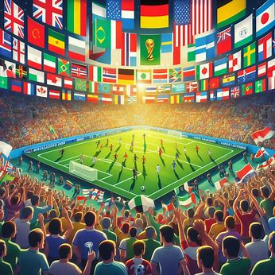

About Me
Me and my hobby
As a person who grew up being outside a lot and playing different sports, I found a hobby and an interest in playing soccer or fútbol. It was the game the whole neighborhood would be playing anytime I went outside. At times it became a slightly dangerous game because of the lengths we would go to just play the game. Jumping over barb wire fences and running onto the train tracks to get our ball back never stopped us from playing our beloved game. Overall, I've enjoyed this game from the unorganized games in the concrete streets to the organized games on fields made for the sport.
My Experience:
This sport was the most accessible to me growing up. It was always around me at home, at school, and the parks. I've been around it since I was five. I've played on some organized teams as well but it has always remained a hobby to help decompress, compete, and stay fit. As mentioned earlier I've played unorganized ball but I spent time on some club and school teams. So, at one point it became more than just a hobby. For brief moment in time the classic young boy's decision to go pro came about. As you can tell, it was shortlived.
Home
What is Soccer?
Soccer is objectively the world's biggest sport. FIFA claims that the World Cup final was watched by around 1.5 billion people world wide. It is one of those sports that brings the world together on the big stage. It has a rich history across the globe in countries like Brazil, Nigeria, France, England, Argentina, South Africa, etc. It has all types of rivalries. Some inter-continental, some cross-country, and even some between the neighboring cities in your country.
Whether you're in the know about the global influence of soccer or not. Its influence and reach cannot be denied.
Benefits of playing/watching soccer
Being an active participant in the art of "fútbol" has some pros:
- Fun way to stay fit and learn how to move your feet in a unique way
- A promise of fun and friends wherever you find a soccer park in the world
- You get to partake in the energy and passion of the World Cup
Best Locations to play
Local Fields
Local soccer fields and parks are the ideal locations. It is one of the safer options and there should be no disruptions from people telling you're not allowed to play there.
Stadiums
If you can access any stadiums, go for it. Then you can imagine fans yelling your name as you dribble the ball. I played in a college stadium once but sadly no fans cheered my name.
Indoor Arenas
Indoor soccer arenas are perfect for playing soccer year-round. Rain, wind, nor heat will be an obstacle in there.
Best Times
Summer/Fall afternoons
The best times for soccer are usually in the late afternoon or early evening when the weather is cooler and players have more energy. The sun is not beaming on your neck and the breeze might be perfect enough to cool off the sweat from playing.
Match Days
Match days are overall the best days to play. Now on top of the fun, there is competition. There is the thrill of a win or loset situation and the intensity of a possible win or go home situation. Also, typicall the excitement and anticipation of match day create a thrilling atmosphere for players and fans alike.
How
Basic Skills
Mastering or being somewhat good at basic soccer skills is essential for success on the field. Some fundamental skills include:
- Dribbling the ball
- Passing to teammates
- Shooting
- Defending your side of the field
Advanced Techniques
Advanced techniques take time and practice to perfect. Some advanced skills include:
- Crossing the ball
- Headers
- Finesse Shots
- Free kicks
Why
Passion for the Game
Soccer is more than just a sport – it's a passion that drives millions of people worldwide. The thrill of competition, the camaraderie among teammates, and the joy of scoring a goal make soccer an unforgettable experience.
Health Benefits
Playing soccer offers a multitude of health benefits. It is good for cardio, mental health, mobility, agility and strength. Your cardiovascular system will be thanking you from all the cardio done in soccer.
Social Unity
Soccer brings the world together, fostering friendships and creating lasting memories. Step into any bar when the world cup is on and see for yourself. I myself saw students flocking to watch the games from the last world cup and saw a variety of flags. Whether you're playing on a team or cheering from the sidelines, soccer provides opportunities for social interaction and community involvement.
AI prompts
give me an embedded css that matches that soccer champions league blue theme, w these constraints Use an embedded stylesheet since this is all one page. Make sure the styling is nice and follows the CRAP principles, No times new roman, generic blue underlined links, no white background, no black text, you get it. Color scheme has to be different than your main site pages.
generate me an image of the atmosphere of the world cup from with different nationalities watching and supporting
generate me an image of black kids running onto the train tracks to get their only ball back. There are no trains coming and the make the background a summer afternoon with a warm orange.